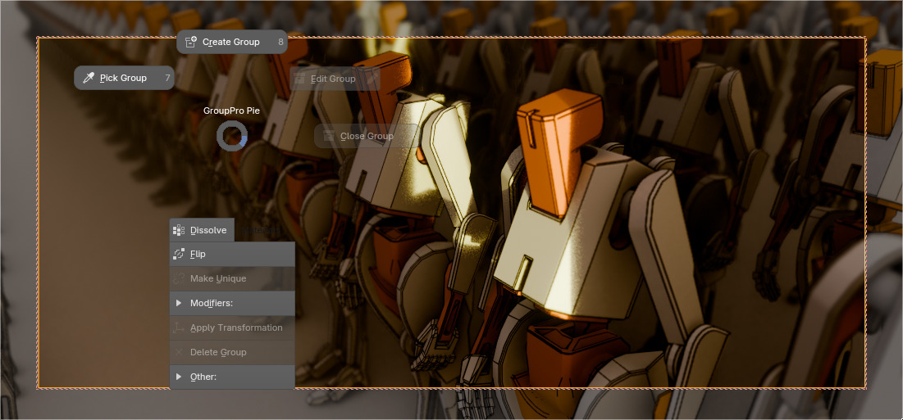
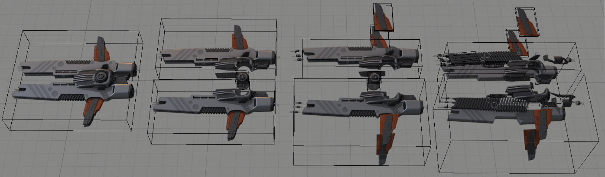
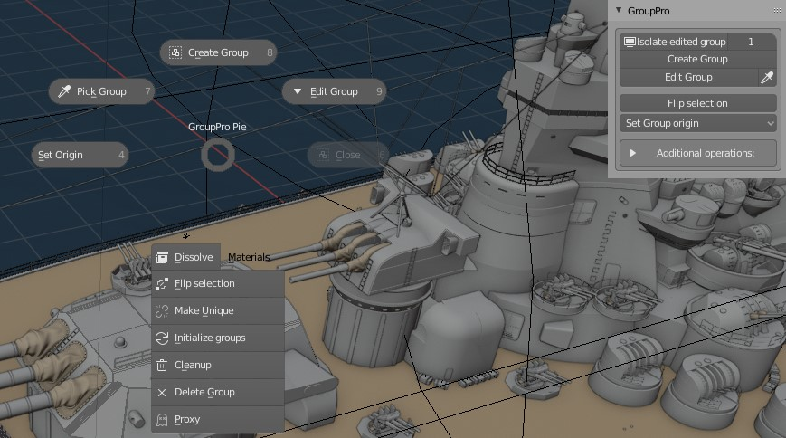
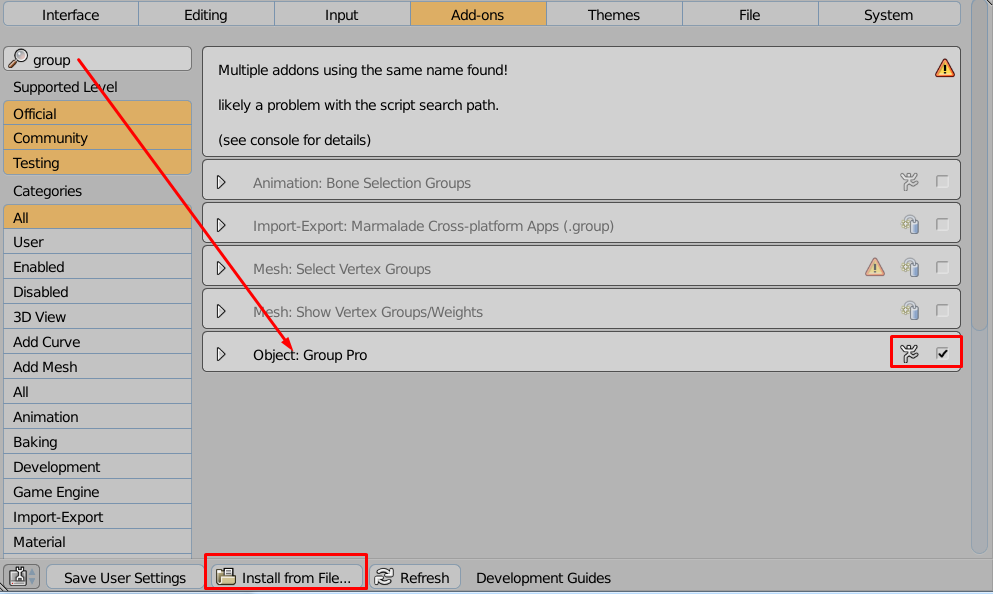
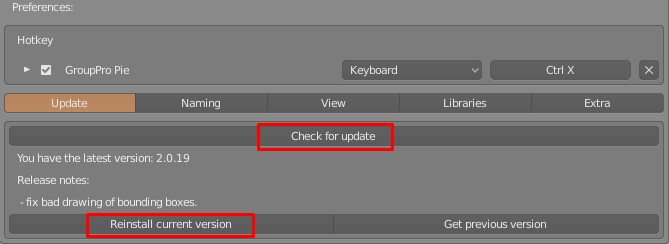
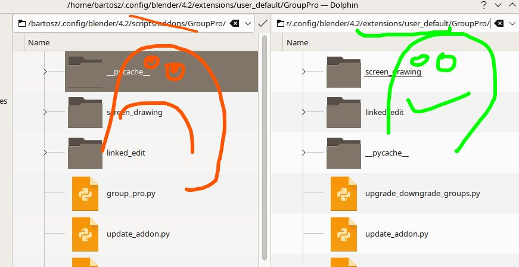

GroupPro Documentation¶

Use Ctrl+X to access GroupPro Pie MenuGroupPro is Blender add-on (now extension) that makes working with groups (collections) of objects in Blender much easier.
Features¶
- Edit any copy: GroupPro lets you edit any copy of the object anywhere in your scene.
- Nested Groups: You can create groups within groups, like folders in your computer. Make changes to any group, and all its copies will update instantly.
- Special Modifiers: GroupPro includes few instancing modifiers to easily make copies of objects in mirrored, lined up, or circular array.
- Add Modifiers: You can now add modifiers like beveling or subdivision directly to your groups, affecting all copies (new in GPro 3.0).
- Easy Edits: Change the size, position, or rotation of a group without affecting its instanced copies.
- Break it Down: GroupPro lets you easily split a group back into its original objects (Dissolve).
- Material Control: Quickly change the material used by all objects in a group at once.
- Faster Viewport: GroupPro can use simpler versions of your objects to speed up your view in the 3D window (group Proxies).
GroupPro makes it a breeze to manage large and complex scenes with lots of objects.
- less memory usage
- easy selection of multiple objects with one click

Example object made from groups of sub-groups, of sub-groups...Location¶
- Ctrl+X GroupPro pie menu (can be changed in addon preferences).
- 3D View > right Sidebar(N) > GroupPro tab (can be changed in preferences).

Video Tutorial¶
Quite new video showing what is new in GroupPro 3.0 (for Blender 4.2+)
Ancient video for Blender 2.79 but most features work similar in Blender 4.2+
Installation¶
To install GroupPro you need zip file from your Gumroad account. Then, inside Blender, go to:
- Edit -> Preferences -> Add-ons, and click 'Install' button.

And navigate to GroupPro_2.x.zip (for Blender 2.8) file location.
Updating¶
GroupPro has build in auto updater. When you use it, updater will download latest GroupPro release and install in background. To use auto updater go to:
- Edit -> Preferences -> Add-ons -> GroupPro -> press 'Check for update'.

In new version is found, press 'Update addon' button, wait few seconds for download, installation and restart blender. Or you download update manually by getting new zip file from your Gumroad account. You should have received download link to zip file, with email when you purchased GroupPro.Extension¶
Since version 3.0++ GroupPro supports only Blender 4.2+. It was also converted from addon to Extension, which is a new way of handling add-ons in Blender 4.2.
GroupPro continues to use custom 'old' auto-updater (I may switch to Blender extension updater in future).
There is one issue though, if you update old GroupPro 2.3.x add-on to new 3.0+ Extension, using built-in auto-updater, the new extension will stay in same ./addons/ folder (auto-updater only updates the files - it does not move them around to different folders).
THE FIX:

After auto-updating move GroupPro 3.x Extension from:./blender/4.2/scripts/addons/ folder to blender/4.2/extensions/user_default/
Note - Info where to find yours addons folder (it depends on your OS), can be found here
OR:
Remove GroupPro 2.3.x add-on, and then install new GroupPro 3.0+ Extension from zip file - like it is explained in Blender Docs. You will have to grab the extension zip file from your Gumroad account.
Support¶
For support or bug reports use this discord server.
Note -Do no use group offset feature, form group panel. Group offset is used by script for calculating data, and it should be never edited by hand. If you do so, group offset will be calculated in wrong way, which will result in incorrect display of group instances.